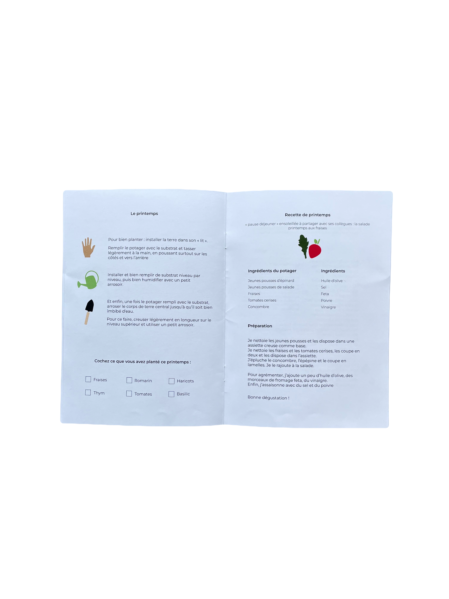
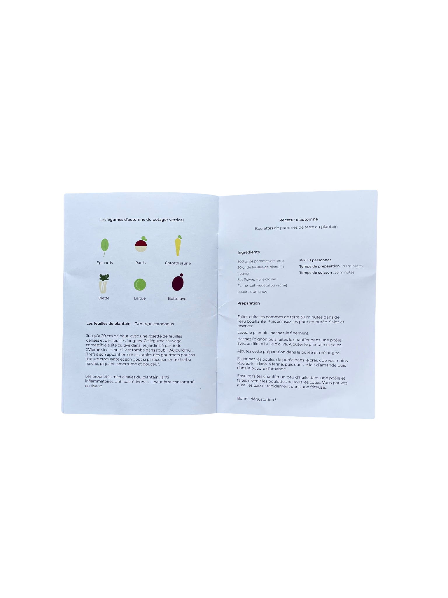
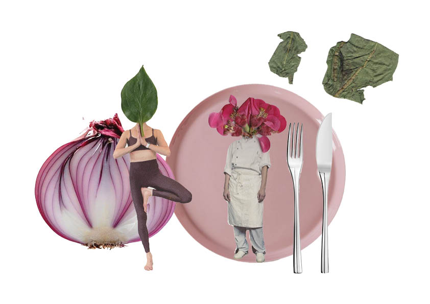

Suivi + Ateliers
Un accompagnement régulier pour entretenir votre potager et apprendre à cultiver toute l’année
Parce qu’un potager évolue au fil des saisons, ce service vous permet de bénéficier d’un suivi pour assurer son bon développement et mieux comprendre son fonctionnement. Toutes les six semaines, une équipe se rend sur place pour vous aider avec l’évolution de vos plantations, et vous conseiller sur l’entretien des plantes, la gestion des récoltes et l’adaptation du potager aux saisons.
 Chaque abonné reçoit le carnet d’accompagnement Povers, un support interactif et ludique qui suit la vie de votre potager et vous donne des repères concrets sur l’évolution de vos plantations. Il intègre des conseils pratiques, des suggestions de plantations saisonnières et un suivi des interventions réalisées.
Les ateliers Povers
En complément du suivi, nous proposons des ateliers pratiques à partager seul, en famille ou entre voisins. Chaque session est conçue pour vous permettre d’acquérir de nouvelles compétences, expérimenter et échanger autour du jardinage, du bien-être ou de la cuisine.
 Je suis intéressée